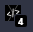

This extension allows you to automatically hide specific elements on web pages based on your preferences. Here's how it works:
In the settings, you can specify a keyword or phrase that the extension should look for within <span> tags on a web page. For example, if you set this to "Ad," the extension will search for any <span> tags that contain the text "Ad."
You can also specify the type of HTML tag that should be removed when the specified text is found. By default, this is set to <article>. This means that when a <span> with the text "Ad" is found, the extension will look for the closest parent element that is an <article> and hide it.
So, if you set "Text to Find in Span" to "Ad" and "Tag to Remove" to <article>, the extension will hide any <article> elements that contain a <span> with the text "Ad."
You will see the icon counter increase when your selected elements are hidden each session.
You can customize these settings to suit your needs, and the extension will automatically update to hide elements based on your new settings.
I don't want your money, just a follow please.
I make these extensions in my free time. Follow me on Twitter to stay up to date on my latest projects and releases.